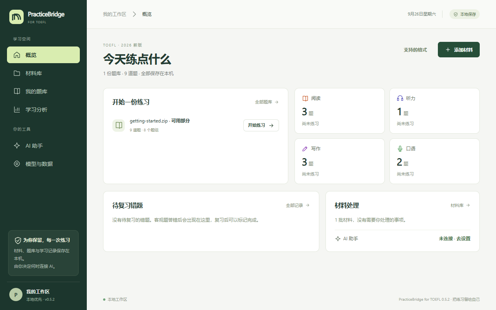
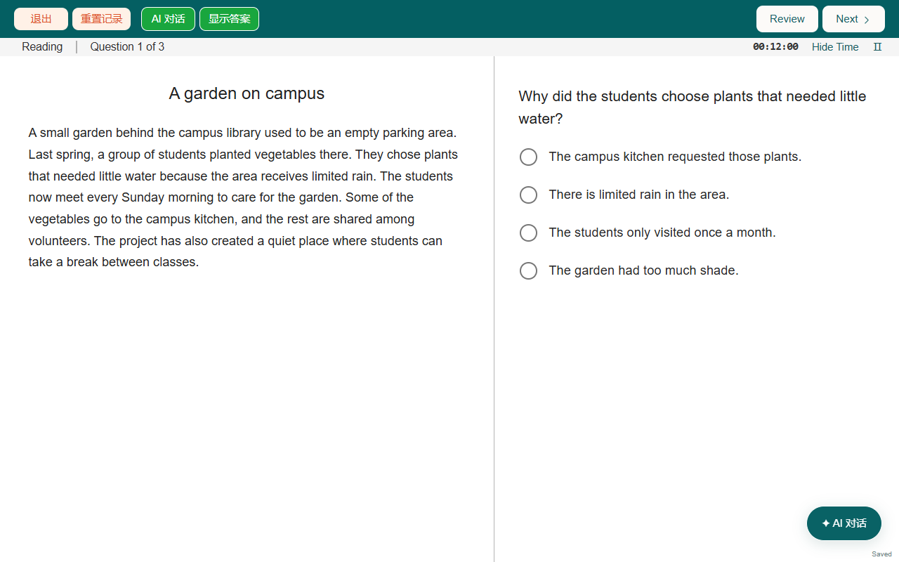

Turn the TOEFL practice material you already have into exam-style practice
PracticeBridge for TOEFL is local practice software for the TOEFL iBT format introduced in January 2026. Put in PDFs, Word files, web text or scans; it finds the questions, options, answers and audio. After you check them, practice section by section with timers, and every attempt stays on your own computer.
Download for Windows (free)Full guide- Free
- Open source (MIT)
- Windows 10/11 portable
- No account
- Imports and practice work offline
- Optional AI with your own model

What it does
Imports common TOEFL material
Official ETS practice tests (student and teacher editions), full mock tests, single-task sets (Complete the Words, Build a Sentence, Listen and Repeat, Write an Email, Academic Discussion and more) and web text.
Reads scans automatically
With local English OCR installed, every page of a scanned PDF is read automatically; uncertain answers are left blank rather than guessed, and an image-capable AI can proofread them against the page.
Exam-style practice
Reading, Listening, Writing and Speaking, 12 task types, a countdown at every stage. PRACTICE one section at a time, or TEST all four in a row.
History and review
Every attempt is saved; mark wrong answers for review and retry them; filter your history by section, task type and date.
Optional AI
Connect your own model to organize hard-to-read material, get written feedback on writing and speaking, or ask questions while practicing. You see what is sent before anything goes online.
Your data stays local
Material, question banks, attempts and recordings live in the data folder next to the app, and one click exports a full backup.
How it works
- Download the ZIP from the Releases page, right-click → Extract All, and run
PracticeBridge.exein the extracted folder. If Windows shows “Windows protected your PC”, click More info → Run anyway. - Click “Add material”, put in your PDF, Word file or text, and save it to the material library.
- Choose “process locally only” → “check and organize locally”.
- Check the questions and answers on the review page, then add the usable ones to your question bank.
- Open “My question bank” and start a section.
The interface is currently in Chinese; the English guide gives every button's Chinese label.

FAQ
How can I turn TOEFL practice PDFs into exam-style practice?
Download PracticeBridge for TOEFL, add your PDF, then choose “process locally only → check and organize locally”. The app finds the questions, options and answers; after you check them, add them to your question bank and practice with timers.
Is there a free practice app for the 2026 TOEFL iBT format?
PracticeBridge for TOEFL is free and open source, built for the format introduced in January 2026, needs no account, and works offline. It doesn't ship official questions; you import your own material, and a small self-authored sample pack is included to try it.
Can it read scanned TOEFL workbooks?
Yes. With local English OCR installed and enabled, scanned pages are read automatically. Answers the local reading isn't sure of are left blank rather than guessed; connect an AI that accepts images and click the proofreading button to fill in most of them. In the project's simulated-scan tests, neither mode gave a wrong answer.
Does it cost anything or need the internet?
It's free. Importing and practicing are offline; it goes online only when you use AI or download the OCR data. AI usage is billed to your own provider account.
Is it affiliated with ETS?
No. It is not affiliated with, endorsed by, or approved by ETS, and it does not convert results to official scores.